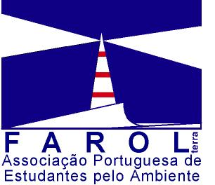
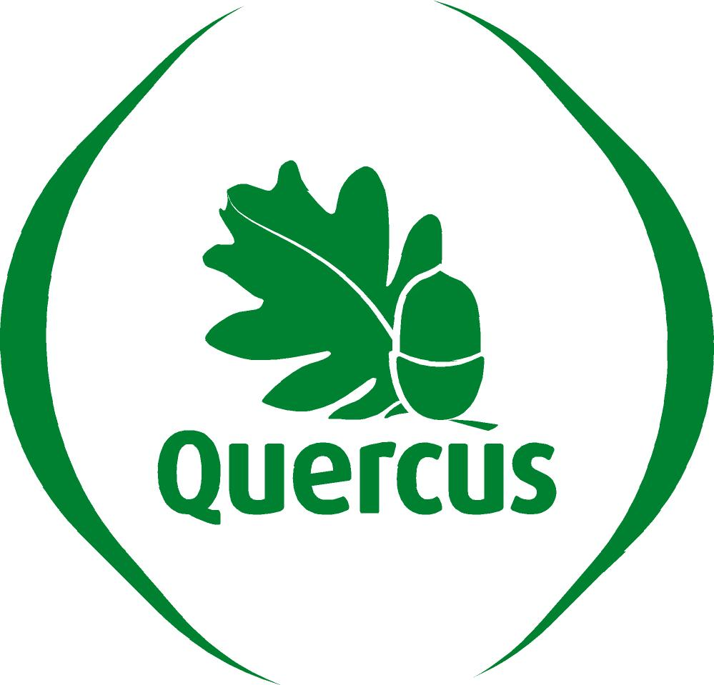

Activismo Cívico
Duas décadas de intervenção cívica e ambiental — do associativismo estudantil nos anos 1990 à defesa do património e da natureza em 2026.

Farol-Terra — Associação Portuguesa de Estudantes pelo Ambiente
Associação co-fundada na Escola Superior de Biotecnologia da Universidade Católica Portuguesa, membro da GOSEA (Global Organization of Students for Environmental Action) com representação em 45 países. Organizou conferências, campanhas ambientais e inquéritos sobre o ensino superior e o ambiente.
~1998 Apresentação da Farol-Terra — Congresso GOSEA
Apresentação da futura FAROL-TERRA
A FAROL-TERRA, Associação Portuguesa de Estudantes pelo Ambiente, é uma organização não governamental, sem fins lucrativos, de âmbito nacional, com os seguintes objectivos:
· promover a consciência ambiental da sociedade, em especial de todos os estudantes;
· contribuir para a formação contínua da sociedade em matéria de ambiente e desenvolvimento sustentável;
· investigar, conservar e dar a conhecer o património natural e cultural.
A Associação tem um nível de actuação nacional mas é composta, a nível regional, por Direcções Regionais e a nível local por Núcleos Ambientais Universitários (NAUs), os elementos básicos e estruturantes da FAROL-TERRA.
Apesar de numa fase inicial da sua existência, a FAROL-TERRA conta já com diversos NAUs, representantes de um grande número de estudantes do ensino superior. Estes localizam-se no Porto existindo contactos fortes com outros pólos universitários em Chaves, Vila-Real, Braga, Aveiro e Lisboa numa perspectiva de alargamento da Associação a curto prazo.
Entre as actividades já desenvolvidas destacam-se:
· inquéritos enviados a todas as instituições de ensino superior sobre “O Ensino Superior e o Ambiente”;
· campanha realizada no Dia da Água;
· campanha de recolha de medicamentos;
· campanha realizada no Dia dos Direitos do Homem.
Tendo a TERRA como FAROL esperamos que os estudantes de hoje sejam os navegadores da sociedade sustentável de amanhã.
Apresentação da GOSEA
A GOSEA, Global Organization of Students for Environmental Action, é constituída por uma rede global de estudantes, tendo em cada país uma organização representante. No caso Português, esta é a FAROL-TERRA. A GOSEA tem representantes em 45 países, em todos os continentes (da Zâmbia ao Canadá, da Suécia à Austrália, do México à Índia e da Turquia ao Japão).
O aparecimento da GOSEA está relacionado com uma conferência realizada em Istambul em Setembro de 1997. Reunidos mais de 150 estudantes de todo o mundo, acordou-se numa declaração (Declaração VOICES) que contém princípios e objectivos orientadores da actuação dos estudantes numa variedade de temas, tais como Tranportes, Educação, Equidade, Riqueza, Associativisto e Divertimento. Para por em prática a declaração foi então criada a GOSEA.
Em Abril deste ano tivemos a primeira conferência regional da GOSEA em Estocolmo, sobre o tema “Os Estudantes por uma Europa Sustentável”, onde estiveram presentes 350 estudantes de 51 países. A GOSEA participa ainda em diversos eventos onde contribui com as suas ideias.
A GOSEA possui, a um nível horizontal da sua estrutura, diversos grupos de trabalho e tem em curso projectos que visam os seus objectivos.
A sigla GOSEA resume-se ao desejo de um fututo sustentável para todos.
Objectivos do I Congresso da GOSEA – Chaves 99’
O Congresso Chaves'99 irá ter lugar em Chaves, de 20 a 26 de Março. Este congresso é um encontro de estudantes do mundo inteiro membros da GOSEA. Como a GOSEA está espalhada por todo o mundo (45 países), serão permitidos dois delegados por cada país. Como muitos estudantes têm dificuldades financeiras, espera-se um número de participantes da ordem dos 60.
O Congresso irá incluir sessões de discussão sobre os seguintes temas:
- estatutos: reformular os estatutos da GOSEA e reformulá-los de forma a que se adaptem às novas necessidades e estratégias da organização;
- grupos de trabalho: discussão sobre os diversos grupos de trabalho da GOSEA (educação ambiental, informação, resíduos, conservação da natureza, etc.), adoptar estratégias e calendarizar actividades;
- partilhar experiências das várias delegações da GOSEA, ou seja, de que forma têm procurado atingir os objectivos da associação;
- passado e futuro da GOSEA: porventura a parte mais importante do congresso será esta; discutir-se-ão novas linhas orientadoras da associação, o que realmente queremos que ela seja e como tem evoluído; desta discussão espera‑se que apareçam novas ideias que possam levar a GOSEA a um lugar importante no contexto educativo ambiental a nível internacional.
Como é lógico estas discussões abrirão muitas outras, e muitas ficarão certamente por discutir. No entanto, a organização empreenderá todos os esforços para que neste congresso as mais importantes decisões sejam tomadas.
Durante o Congresso, os membros da GOSEA serão convidados a apresentar as suas organizações e países. Haverá espaços definidos para apresentação de posters e outros materiais.
Outro objectivo do congresso inclui a partilha de conhecimentos, experiências e informações relativas à cultura e tradições de cada país, bem como dar a conhecer Portugal e seu património, fundamentalmente na região onde se realiza o congresso.
Programa do I Congresso da GOSEA – Chaves 99’
|
Orçamento do I Congresso da GOSEA – Chaves 99’
2000-03 Ciclo sobre Transgénicos — comunicado de imprensa
FAROL-TERRA – Associação Portuguesa de Estudantes pelo Ambiente
Escola Superior de Biotecnologia - U.C.P.
Rua Dr. António Bernardino de Almeida
4200 - 072 Porto
E-mail: secretariado@farolterra.web.pt
URL: http://www.farolterra.web.pt/
Assunto: Conferência Data: 28/03/2000 Para: Redacção
Ciclo sobre Transgénicos
A FAROL-TERRA - Associação Portuguesa de Estudantes pelo Ambiente convida todos os órgãos de imprensa a estarem presentes na 2ª conferência deste ciclo e solicita a sua divulgação:
“Transgénicos, Legislação e Saúde”
Pretende ser um contributo para a discussão de um tema tão polémico e actual como o uso de alimentos geneticamente modificados e a sua relação com a saúde e legislação.
Vai decorrer esta Quinta-feira, 30 de Março, pelas 21:30, no Auditório da Universidade Católica Portuguesa – Centro Regional do Porto, na Rua Diogo Botelho. Contará com a presença dos seguintes oradores:
Profª.
Doutora Margarida Oliveira
(Prof.
Auxiliar da Faculdade de Ciências da Universidade de Lisboa)
Prof.
Doutor Jorge Sequeiros
(Médico
Presidente do Colégio de Genética da Ordem dos Médicos)
Dr.
Jorge Nascimento Fernandes
(representante
do Secretário de Estado do Ambiente)
Profª.
Doutora Margarida Silva
(representante
da Quercus – Associação Nacional de Conservação da Natureza)
Prof.
Doutor António Rangel
(Prof. da
Escola Superior de Biotecnologia da Universidade Católica Portuguesa)
Para mais informações ligar o 917959316 (Joana Cordeiro) ou o 917002865 (Nuno Carvalho).
Desde já agradecemos a atenção dispensada.
Com os melhores cumprimentos,
Nuno Quental
(pela Direcção da FAROL-TERRA)

Quercus — Núcleo do Porto
Coordenação do Núcleo do Porto da Quercus — Associação Nacional de Conservação da Natureza. Produção de 198 comunicados de imprensa sobre temas como conservação da natureza, resíduos e co-incineração, transportes e mobilidade, ordenamento do território, energia e alterações climáticas. Dinamização de campanhas e grupos de trabalho sobre a Barrinha de Esmoriz, Reserva Ornitológica de Mindelo, Rio Tinto e amianto em Vila das Aves. Publicação do boletim Ecografia.
213 textos →
Movimento pelo Parque da Cidade
Movimento cívico contra a urbanização do Parque da Cidade do Porto. Lançou um referendo de iniciativa popular, mobilizou milhares de cidadãos e personalidades, e obteve uma vitória histórica: o Parque foi salvo. Do manifesto fundador — «Como ter um Parque da Cidade verde em oito parágrafos» — à declaração final de que «O Parque da Cidade está a salvo».
22 comunicados →Comissão de Defesa do Jardim do Marquês
Movimento contra a destruição do Jardim do Marquês de Pombal pelas obras do Metro do Porto. Organizou uma manifestação e distribuiu folhetos pela cidade sob o lema «Metro sim, mas sem estragar o jardim!».
2002-05 Comunicado de manifestação
|
|
A Comissão de Defesa do Jardim do Marquês, confrontada com a decepagem abrupta de várias árvores nesta zona verde, vem por este meio convidar os órgãos de comunicação social a estarem presentes no próximo Sábado, 18 de Maio, pelas 15:30, neste Jardim. Pretendemos realizar uma manifestação, incluindo algumas actividades mediáticas, contra aquilo que consideramos ser a destruição de um espaço imprescindível para os portuenses.
Confirmaram-se os piores receios da Comissão. Violando frontalmente o compromisso assumido com a população, a mutilação das árvores não se resumiu às 3 que foram abatidas (e enganadoramente transplantadas para a Praça Velázquez). Pelo contrário: prosseguiu! Num lamentável acto de cobardia, sem informar a Comissão nem prestar qualquer esclarecimento antecipado, a poda drástica alargou-se a muitas outras árvores, deitando por terra qualquer esperança de se voltar, um dia, a reconhecer um Jardim do Marquês.
Mas a poda tem de parar, e já, para salvar as árvores que restam!!
Desta forma, ficariamos muito gratos aos variados órgãos de comunicação social se pudessem divulgar a manifestação agendada para Sábado.
Para mais informações, contactar:
- António Soares da Luz: 91 992 03 74
- Laura Fonseca: 93 805 45 61
2002-05 Contra o crime ambiental no Jardim do Marquês
|
CONTRA O CRIME AMBIENTAL NO JARDIM DO MARQUÊS
Sábado, 18 de Maio, 15:30, no Jardim Primeiro eram só três árvores que iam ser transplantadas, embora todos soubessemos que, na verdade, estavam condenadas. Mas afinal isto não é verdade! Estão a mutilar muitas outras! Precisamos de nos mobilizar contra isto! REAJA, ANTES QUE SEJA TARDE! A CIDADE TAMBÉM É SUA! |
CONTRA O CRIME AMBIENTAL NO JARDIM DO MARQUÊS
Sábado, 18 de Maio, 15:30, no Jardim Primeiro eram só três árvores que iam ser transplantadas, embora todos soubessemos que, na verdade, estavam condenadas. Mas afinal isto não é verdade! Estão a mutilar muitas outras! Precisamos de nos mobilizar contra isto! REAJA, ANTES QUE SEJA TARDE! A CIDADE TAMBÉM É SUA! |
2002 Querem acabar com o Jardim do Marquês
|
QUEREM ACABAR COM O JARDIM DO MARQUÊS
Junte-se ao nosso protesto! Exija uma cidade com vida!
Primeiro eram só três as árvores a ser transplantadas, embora todos soubessemos que, na verdade, estavam condenadas. Mas nem isto era verdade! Estão a mutilar muitas outras! Precisamos de nos mobilizar contra isto! REAJA, ANTES QUE SEJA TARDE! A CIDADE TAMBÉM É SUA! |
QUEREM ACABAR COM O JARDIM DO MARQUÊS
Junte-se ao nosso protesto! Exija uma cidade com vida!
Primeiro eram só três as árvores a ser transplantadas, embora todos soubessemos que, na verdade, estavam condenadas. Mas nem isto era verdade! Estão a mutilar muitas outras! Precisamos de nos mobilizar contra isto! REAJA, ANTES QUE SEJA TARDE! A CIDADE TAMBÉM É SUA! |
MUT — Movimento de Utentes dos Transportes
Membro da Comissão Instaladora do Movimento de Utentes dos Transportes da Área Metropolitana do Porto. Lutou contra a reestruturação da rede da STCP e o sistema tarifário do Andante.
2006-03-17 Um Andante que dá pouca mobilidade
Comunicado à imprensa
17 de Março de 2006
Um Andante que dá pouca mobilidade
Sistema de zonamento e tarifário devem ser repensados
A inauguração da linha do metro até à Póvoa de Varzim, amanhã, levou o recém‑constituído Movimento de Utentes dos Transportes da Área Metropolitana do Porto a tomar a sua primeira posição pública.
Pretendemos fazer três exigências fundamentais à melhoria do serviço público de transportes:
1) Repor a anterior rede da STCP até que esteja em funcionamento a Autoridade Metropolitana de Transportes (AMT);
2) Simplificar o sistema de zonamento do Andante;
3) Adaptar o tarifário aos diversos tipos de utilizador e equiparar os preços aos praticados em Lisboa.
O Movimento de Utentes dos Transportes, em diversas reuniões públicas já realizadas, é unânime em afirmar que, apesar de considerar o metro do Porto um projecto que tem um enorme potencial para aumentar a mobilidade da população, está assente num sistema de zonamento e num tarifário que constituem barreiras significativas a que se possa atingir esse objectivo.
Acresce que a reorganização da rede da STCP, apressada e pouco transparente, irá prejudicar milhares de utentes e reduzir, objectivamente, a capacidade de deslocação destes. Estranhamente, os principais afectados parecem ser moradores de bairros sociais onde a taxa de utilização de transporte público é mais elevada.
1 – A rede da STCP anterior à reestruturação em curso deve ser recuperada até que a AMT esteja em pleno funcionamento
Uma mudança da rede de transportes deve ser cuidadosamente planeada e amplamente participada, sempre com o objectivo último de servir mais utentes e com maior rapidez e conforto. Não cremos que isso esteja a acontecer com a reformulação actualmente em curso da rede da STCP.
· a empresa tem-se pautado por uma grande falta de transparência. Ainda não divulgou publicamente o seu plano, apenas forneceu uma ideia muito global, certamente para evitar protestos generalizados;
· os utentes não foram ouvidos nem devidamente esclarecidos com antecedência;
· tudo aponta para que diversas zonas da cidade e região fiquem pior servidas por transportes públicos do que acontecia até então, contrariando directamente o objectivo de qualquer reestruturação da rede de transportes.
O Governo já afirmou que irá reforçar os poderes das AMT, prevendo-se para breve a sua entrada em funcionamento. Neste sentido, julgamos ser da mais elementar prudência e racionalidade aguardar por um parecer e estudo desta entidade antes de qualquer alteração à rede de transportes da Área Metropolitana do Porto, em particular da rede da STCP.
O Movimento de Utentes dos Transportes deverá estar representado na AMT, para o que é necessário que o Governo regulamente a criação de Comissões de Utentes (aguarda-se que isso aconteça desde 1999).
2 – Sistema de zonas do Andante é complexo e cria barreiras à mobilidade, pelo que deve ser repensado
A rede do Andante é composta por qualquer coisa como 43 zonas diferentes! Ao contrário do que acontece em Lisboa, onde se instituiu um zonamento simples e prático de coroas concêntricas, a Área Metropolitana do Porto foi retalhada em polígonos de forma esquisita que os utentes não compreendem e que, diariamente, criam enormes dificuldades à mobilidade.
Até a cidade do Porto, pequena e compacta, foi dividida em 3 zonas! Percebemos que o objectivo é obrigar o utente a percorrer um número maior de zonas (para que pague mais), mas esta perspectiva é intolerável. Mais uma vez contraria-se claramente o objectivo principal de um sistema de transportes: servir bem o utente.
Por este motivo, o Movimento de Utentes dos Transportes pretende:
· que o sistema de zonas seja repensado e fortemente simplificado, recorrendo‑se por exemplo a zonas maiores;
· a cidade do Porto, em particular, seja constituída por uma única zona (correspondendo à actual zona A da STCP), eventualmente abrangendo também parte do concelho de Matosinhos e de Vila Nova de Gaia.
3 – O tarifário deve ajustar-se aos diversos perfis de utente e ser mais barato!
Encontramos nos sistemas de transporte alguma variedade de bilhetes e passes de modo a ajustar-se melhor aos diversos perfis de utente, evitando que estes paguem por serviços de que não beneficiam e estimulando a utilização do transporte público através de preços mais atraentes.
Verificamos, contudo, que o tarifário Andante foi pensado para obrigar o utente a pagar o mais possível. Uma comparação com Lisboa revela diferenças abismais:
|
Porto |
Lisboa |
|
|
Passe Metro + Autocarro |
28,85€ |
25,35€ |
Note-se que no Porto ainda não haja intermodalidade total e que a cidade é bem mais pequena que Lisboa.
|
AMP (12 zonas) |
AML (Coroa L123) |
|
|
Passe Metro + Autocarro |
87,80€ |
|
|
Passe Carris + Metro + Rodoviária Lisboa + Transp. Sul Tejo + CP + Soflusa (CP) + Transtejo + Colect. Barreiro + Lisboa Transportes + Scotturb |
|
48,20€ |
Note-se que a área das coroas L, 1, 2 e 3 é muito superior à área das 12 zonas na região do Porto. (AMP – Área Metropolitana do Porto; AML – Área Metropolitana de Lisboa)
|
Porto (Z4) |
Lisboa |
|
|
1 viagem intermodal |
1,35€ |
1,10€ |
Uma consulta aos endereços www.linhandante.com/noticias-det.asp?noticiaid=26 e www.carris.pt/index.php?area=balcao&subarea=balcao_tarifario_intermodais permitirá chegar a outras conclusões semelhantes. Em Lisboa o serviço é sistematicamente melhor e mais barato.
O transporte público não pode ser encarado numa perspectiva unicamente economicista, devendo a sua função social prevalecer. Exigimos por isso:
· a criação de passes sociais intermodais, com preços especiais para estudantes e reformados (abrangendo todos os operadores e modos de transporte aderentes ao sistema);
· a criação de passes para diferentes geografias (por exemplo: só para a cidade do Porto; para Porto, Matosinhos e Gaia; para Porto, Matosinhos e Maia; para Porto, Matosinhos, Vila do Conde e Póvoa de Varzim; etc.); este modelo pode adaptar-se melhor às necessidades dos utilizadores e deve ser usado em complemento com a escolha de zonas prevista actualmente no Andante;
· a uniformização dos preços aos praticados em Lisboa e pela CP.
O que o MUT irá fazer
Aquando da inauguração da linha vermelha um representante do MUT irá entregar ao Sr. Ministro das Obras Públicas, Dr. Mário Lino, uma carta contendo as reivindicações apresentadas ao longo deste texto.
Informações adicionais
Norberto Alves: 91 980 29 77
2007-01-12 STCP: do serviço público à falta de serviço
transportes.amp@gmail.com
9 de Janeiro de 2007
STCP: do serviço público à falta de serviço
Acções de protesto irão continuar até que a rede anterior seja reposta
“Para assegurar o direito à habitação, incumbe ao Estado programar e executar uma política de habitação inserida em planos de ordenamento geral do território e apoiada em planos de urbanização que garantam a existência de uma rede adequada de transportes e de equipamento social.” Constituição da República Portuguesa, artigo 65º, al. 2 a)
“O Estado promoverá o desenvolvimento de formas de concertação com os utentes ou organizações representativas destes, bem como da sua participação na definição dos objectivos das empresas públicas encarregadas da gestão de serviços de interesse económico geral.” Decreto-Lei nº 558/99, artigo 22º, al. 1
O historial
Já estávamos habituados ao facto de a lei ser, demasiadas vezes, pouco mais do que letra morta. Até ao início do ano região do Porto era servida por uma rede de autocarros com uma elevada cobertura territorial. Apesar das suas muitas deficiências a outros níveis – horários desadequados, falta de pontualidade e atrasos, paragens desconfortáveis – que precisavam de ser colmatados, as principais zonas habitacionais e equipamentos púbicos eram razoavelmente cobertos pela STCP.
Com a construção do Metro do Porto havia necessidade de repensar alguns percursos, evitando duplicações e adequando a rede de autocarros ao serviço prestado pelo metro, numa óptica de intermodalidade benéfica para o utente. Afinal de contas, dizem-nos constantemente que é preciso incentivar o uso de transportes públicos. As promessas lançadas periodicamente pela administração da STCP vinham neste sentido: venderam-nos a ideia de uma rede mais ampla, autocarros mais pontuais e regulares, uma ligação perfeita com o metro...
Os detalhes da reestruturação, porém, foram sempre mantidos no segredo dos Deuses. Em caso algum foram os utentes convidados a participar activamente. Os movimentos e as Juntas de Freguesia que se preocuparam atempadamente em alertar a STCP para eventuais problemas (assim que se souberam pormenores sobre as novas linhas) foram sistematicamente ignorados. Assim aconteceu com os moradores do Bairro de Santo Eugénio, no Porto, que viram perder a carreira 77, agora 206.
A campanha pública de informação da STCP foi simplesmente desastrosa, tendo-se iniciado apenas na segunda quinzena de Dezembro. Os próprios motoristas só receberam formação durante um mês, levando alguns deles inclusivamente a enganar-se no percurso. As paragens, dispondo já das novas e complicadas numerações de 3 dígitos, conservam contudo os mapas e horários da rede antiga! Até ao momento não foram editados mapas representando toda a rede, algo essencial para quem recorre ao transporte público.
Em poucas palavras, todo o processo se desenvolveu de forma vergonhosa, ignorando os utentes e o seu direito à participação e informação.
A mentira revelada
Se havia razões para duvidar da bondade da proposta da STCP, os primeiros dias de Janeiro de 2007 vieram desvanecê‑las. A nova rede da STCP revelou-se um logro, uma verdadeira fraude para os milhares de utentes que diariamente dependem dos transportes públicos. Os problemas foram de tal forma graves que surgiram espontaneamente diversos movimentos populares de contestação; sucederam-se as barragens à passagem de autocarros; e, curiosamente, a administração da STCP admitiu proceder a alguns ajustamentos que qualificamos como de mera cosmética.
Não restam hoje dúvidas quanto aos sofismas tanto propalados por políticos e administradores da STCP. Quando afirmam pretender estimular o uso do transporte público e o seu funcionamento eficaz, estão isso sim a pensar em cortes orçamentais cegos, esquecendo as consequências – sociais e económicas – que uma atitude irreflectida como essa acarreta.
A nova rede da STCP, bafienta porque já podre, prejudica a esmagadora maioria dos utentes de transportes:
· é territorialmente menos abrangente, ou seja, serve menos comunidades e um menor número equipamentos, alguns deles tão importantes como centros de saúde e escolas; de salientar alguns bairros sociais que, muito embora sejam comprovadamente os locais onde percentualmente mais pessoas recorrem aos transportes públicos, foram esquecidos ou prejudicados pela nova rede;
· implica um maior número de transbordos para um mesmo percurso, obrigando a tempos de espera significativamente superiores e a uma perda de conforto; foram referenciados aumentos dos 20 minutos para 1 hora para percursos que antes se faziam num único veículo e que com a nova rede passaram a obrigar a dois transbordos (viagem em três autocarros);
· oferece menos alternativas de mobilidade, visto que o número de carreiras foi substancialmente reduzido (de 82 para 49), o que é especialmente grave quando a pontualidade e regularidade dos autocarros é tudo menos fiável;
· o número de viagens de vários autocarros foi substancialmente reduzido, levando ao aumento dos tempos de espera ou à sobrelotação dos veículos; ainda agora, decorridos 9 dias desde a entrada em vigor da nova rede, continuam a surgir inúmeras notícias de carreiras absolutamente lotadas e de veículos que por isso mesmo ignoram as paragens; será que a STCP, apesar de décadas de experiência, não conhece as cargas da sua rede?
· diversas carreiras foram pura e simplesmente suprimidas durante os fins-de-semana (embora os passes sejam válidos para os 30 dias do mês!).
Como é evidente, estão criadas as condições para que mais pessoas recorram ao automóvel, contribuindo para o subfinanciamento da STCP. Este acelerar da dependência do automóvel, uma mudança no sentido precisamente oposto ao desejável, continuará a trazer fortíssimos problemas ambientais, como sejam o agravamento das emissões de gases com efeito de estufa e da poluição atmosférica, bem como o acentuar da pressão para a construção de mais estradas e parques de estacionamento. Lamentavelmente, parece também não haver qualquer pudor em impor aos utentes aumentos nos títulos de viagem e nos passes, apesar de a qualidade de serviço oferecido ser escandalosamente inferior.
O que exigem os utentes de transportes públicos
Num quadro negro como aquele que aqui se descreveu os utentes vêm exigir a reposição imediata da antiga rede da STCP, a qual só deverá ser reconfigurada após ampla discussão pública com os utentes, autarquias, e verificação e validação independente pela Autoridade Metropolitana de Transportes, cujo início de funções se aguarda.
A não reposição da qualidade de serviço de que os utentes de transportes usufruíram até ao final de 2006 implicará a continuidade das formas de luta que têm vindo a ser seguidas. Os utentes não vão cruzar os braços!
A próxima manifestação será já na sexta-feira, pelas 17:30, no largo dos Lóios, onde se pretende congregar a força dos vários movimentos existentes.
PROMindelo
Parecer do Movimento PROMindelo sobre a criação da Paisagem Protegida do Litoral de Vila do Conde, defendendo a protecção da Reserva Ornitológica de Mindelo.
Petição pelo Centro Histórico do Porto
Petição pública «pela recuperação, contra o fachadismo» no Centro Histórico do Porto, inscrito como Património Mundial da UNESCO. Dirigida ao Presidente da Câmara Municipal, à DGPC, à Assembleia da República e à Procuradora-Geral.
GARRA — Grupo de Acção para a Reabilitação do Ramal da Alfândega
Carta aberta ao Presidente da Câmara do Porto pela utilização do Ramal da Alfândega (túnel ferroviário de 4 km entre Campanhã e a Alfândega) para transporte de passageiros, em vez de ecopista. URL
2020 Carta aberta ao Presidente da Câmara do Porto — por uma decisão definitiva sobre o uso do Ramal da Alfândega
Carta aberta ao Presidente da Câmara do Porto – por uma decisão definitiva sobre o uso do Ramal da Alfândega, idealmente para transporte de passageiros
Caro Rui Moreira,
O município do Porto decidiu, e muito bem, aproveitar finalmente o Ramal da Alfândega. Trata-se dum canal ferroviário com 4 km de extensão que liga a estação de Campanhã (o grande centro intermodal da cidade e da região) à Alfândega, em pleno centro histórico da cidade. Foi usado para transporte de mercadorias entre 1888 e 1989, estando nele incluído o denominado "Túnel do Porto" que transportava as mercadorias da Alfândega para a rede nacional de ferrovias, e que está lamentavelmente encerrado há 31 anos.
Há seis meses o município apresentou duas alternativas para o uso do ramal: um percurso para peões e ciclistas (conhecido por "ecopista"), ou a instalação de um comboio ou elétrico para passageiros. Nessa altura afirmou que a decisão ia ser tomada pela cidade, após um debate público alargado.
Porém, no dia 22/6/2020 o executivo anunciou a decisão de avançar já para a instalação de uma ecopista temporária enquanto não se decide o que fazer ao ramal, investindo quase 1 milhão de € nessa solução.
Foi essa decisão, que acreditamos não ser a ideal, que nos levou a reactivar o GARRA (Grupo de Acção para a Reabilitação do Ramal da Alfândega) – criado em 2005 com o intuito de aproveitar este ramal para o transporte de passageiros e de o integrar na rede de mobilidade da cidade.
O município argumenta que, tomando agora posse do ramal (cedido pela Infraestruturas de Portugal), não faz sentido esperar por esse debate público, projecto e concurso, que demoraria três a quatro anos. Ao invés, avançaria já com a execução de uma das duas alternativas, e depois promoveria o tal debate.
Embora o GARRA seja altamente favorável à criação de ecopistas e ciclovias, esta "ecopista temporária" (provavelmente a primeira em todo o Mundo) é uma solução algo bizarra visto que quase metade do seu percurso decorre num túnel de 1,3 km de extensão. Pior que isso, trata-se de construir uma ecopista num canal que, se usado para transporte ferroviário de passageiros, se pode revestir de uma importância estratégica para a cidade.
Se por um lado saudamos a vontade da Câmara de sair do imobilismo e dar uso a uma infraestrutura desaproveitada há três décadas, por outro receamos que uma solução temporária nos condene a ficar com ela em definitivo; e que, não obstante as boas intenções do executivo, acabe por ser uma forma de tomar uma decisão sem ter que a assumir e sujeitar a discussão. A experiência de escolas e centros de saúde temporários há décadas não nos deve deixar com ilusões.
Estamos conscientes que grande parte da obra proposta pela Câmara poderá ser reaproveitada num futuro uso ferroviário, mas será lícito retirar aos Portuenses uma das suas poucas ecopistas depois de eles dela usufruírem – um percurso que não conheciam, com pavimento novo, boa vista, iluminação e mobiliário?
Ou será que ao dar a conhecer o ramal aos portuenses estes vão finalmente compreender o potencial que representa, exigindo assim o seu aproveitamento cabal para transporte de passageiros? Não sabemos, mas cremos ser mais plausível ver a inércia vencer e uma solução útil para o ramal ficar irremediavelmente adiada. Daí a importância de se fazer já uma escolha informada.
O Município indica que a ecopista permite a "requalificação ambiental e paisagística da envolvente do ramal, nomeadamente através da criação de um parque urbano em socalcos"; indica também que a solução da ferrovia permitiria "a reconversão de parte do parque de estacionamento da Alfândega numa zona de fruição e lazer."
O GARRA acrescenta que a ferrovia no ramal não prejudica a recuperação paisagística da escarpa, que pode ser feita acima e abaixo da cota da linha. Ou seja, ambas as soluções têm benefícios paisagísticos, mas os da ecopista são a 30 metros de altura, numa escarpa, e os da ferrovia são em pleno centro histórico da cidade, no actual parque de estacionamento da Alfândega.
O GARRA defende por isso um debate imediato sobre a solução definitiva a adoptar. De forma a lançar esse debate, procuramos, de forma sintética, avaliar os principais méritos de cada uma das opções:
1) Mobilidade
Ecopista: Obriga a subir 63 metros ao longo de 4 km (o mesmo que ir do Parque da Cidade até à Casa da Música), o que não é fácil para a maior parte das pessoas, e percorrer 1327 metros num túnel entre a Alfândega e a Ponte do Infante. Quem quererá caminhar regularmente durante 15 minutos (ou pedalar 5 minutos) dentro dum túnel, ainda que bem iluminado, em vez de apreciar a paisagem Património da Humanidade? Que segurança transmitirá um espaço assim?
Ferrovia: Segundo o próprio executivo da C.M. do Porto, “a ligação rápida entre Campanhã e a Alfândega constituiria um serviço de mobilidade inédito entre estes dois polos de elevada atração urbana, tendo como principal objetivo a redução do número de veículos motorizados que entram diariamente na cidade.” Em Campanhã está a ser construído um grande terminal intermodal cujo alcance geográfico passará a incluir o centro histórico do Porto.
2) Custo
Ecopista: seriam gastos no imediato cerca de 900.000 €, dos quais cerca de 1/3 não teriam aproveitamento numa solução definitiva de ferrovia. Isto num percurso que é, em grande medida, redundante com a ciclovia e caminho pedonal na Avenida Gustavo Eiffel entre a Ponte D. Luís e a Ponte do Freixo. Sim, 30 metros abaixo existe um percurso paralelo ao ramal com capacidade para receber milhares de peões e ciclistas, e onde o município teve a boa iniciativa de restringir a circulação de carros aos fins-de-semana. Com os 300.000 € de eventual desperdício pode, por exemplo, construir-se vários dos 35 quilómetros de ciclovia que a cidade tem previstos até ao final deste ano...
Ferrovia: estimamos 4 milhões de € para a reposição dos carris e travessas, consolidação dos taludes e sinalização electrónica; segundo o jornal Público, a CP está disponível para, assim que as obras estejam concluídas, assegurar o serviço ferroviário no ramal utilizando, para já, uma automotora a diesel. Mais à frente, gastando mais 4 milhões, pode-se conseguir um veículo a hidrogénio ou bateria para tornar o ramal pioneiro nas energias limpas. Estes valores podem ser repartidos por alguns anos e são perfeitamente comportáveis pelo orçamento da Câmara, que só em 2019 investiu 68 milhões de € e conta com um excedente orçamental inédito.
Recorde-se que o custo da linha Rosa do Metro do Porto poderá rondar os 190 milhões de €, integrando quatro estações e cerca de 3 km de via para ligar S. Bento/Praça da Liberdade à Casa da Música. No Ramal da Alfândega, com menos de 5% desse investimento, teremos um novo troço de 4 km para a rede de mobilidade do Porto aproveitando um activo que já existe.
3) Ligação à Ponte D. Maria
O ramal da Alfândega passa 30 metros abaixo da ponte D. Maria, única obra de Eiffel na cidade; a intervenção no ramal pode e deve ajudar a desbloquear o projecto de reactivação da ponte como percurso para peões e bicicletas, sendo este outro activo de grande valor que a cidade pode reavivar no âmbito do turismo cultural.
Ecopista: não acrescenta grande coisa ao acesso à ponte tendo em conta os 30 metros de diferença de cota, a não ser que se promovam outras obras para esse efeito.
Ferrovia: facilitará o acesso por transporte público à ponte D. Maria a partir da ribeira ou de Campanhã através de uma paragem a meio do percurso que seria servida de escadas e elevador, ligando a marginal, o ramal, a ponte D. Maria e a Rua de São Vítor (à imagem das ligações mecanizadas que estão em construção entre a Alfândega e o Palácio de Cristal).
4) Desenvolvimento induzido pelas opções
Ambas as soluções têm diferentes potenciais de induzir desenvolvimento.
Ecopista: Como pista ligeira permitirá o fluxo de pessoas em passeio, com potencial de atratividade moderado a baixo considerando o declive e a atual marginal 30 metros abaixo.
Ferrovia: Permitirá o transporte de passageiros da rede de transportes ao casco velho da cidade, potenciará o acesso a atividades ligadas ao turismo, ao alojamento local existente e à Igreja de São Francisco. Mais estratégico ainda, facilitará o acesso a Alfândega ao aeroporto em menos de 60 minutos, aumentando substancialmente a atractividade do Palácio da Bolsa e do Centro de Congressos da Alfândega do Porto (eleito vários anos consecutivos como “Best Meetings & Conference Center in Europe”), bem como as condições para este tipo de turismo, consolidando diferentes segmentos. Permitirá ainda rentabilizar o elétrico da marginal e fazer eventualmente ligação ao Cais de Gaia.
Os 4 km do ramal da Alfândega, incluindo um enorme túnel em pleno centro histórico, custariam muitos milhões se fossem feitos hoje (para se ter noção, sabendo que o Metro do Porto tem um custo médio por quilómetro de cerca de 16 milhões de €, estamos a falar em pelo menos 64 milhões de € - mesmo ignorando a o facto de a proporção em túnel ser maior no ramal que no Metro do Porto).
Tal como aconteceu no Matadouro (investimento que se prevê ronde os 40 milhões de €), a cidade do Porto tem por isso o privilégio de poder decidir o que fazer com um activo que temos congelado há muitos anos.
Há duas opções principais sobre a mesa. A opção pela ferrovia é uma aposta estratégica na cidade, turismo e mobilidade sustentável, e em nada impede o usufruto de ciclistas e peões tendo em conta a existência de alternativas muito próximas. A opção pela ecopista, sendo algo sempre desejável e de que a cidade tem enorme carência, parece neste caso desajustada e representa uma visão muito pouco ambiciosa para a urbe.
O Porto não se pode dar ao luxo de continuar a sub-aproveitar uma infraestrutura que liga a parte alta da cidade à parte baixa, e esta aos comboios suburbanos, de longo curso e Metro do Porto. A ferrovia serve melhor os portuenses e os vários tipos de turismo do que uma ciclovia.
Tal como o novo Matadouro será um "game changer" no desenvolvimento da parte oriental da cidade – nas palavras de Rui Moreira – também o Ramal da Alfândega o pode e deve ser para a mobilidade no Porto.
Assim, o GARRA pede ao Município, aos especialistas e aos Portuenses que apresentem, avaliem e discutam já as alternativas para assim se tomar a decisão que melhor serve os interesses dos cidadãos.
Queremos contribuir para a discussão e estamos ao vosso dispor,
GARRA – Grupo de Acção para a Reabilitação do Ramal da Alfândega
Pedro Pardinhas
Jorge Mayer
Nuno Quental
Declaração sobre o Ambiente e o Futuro de Portugal
Manifesto colectivo dirigido ao Presidente da República e a todos os portugueses sobre o futuro ambiental de Portugal.
Declaração sobre o Ambiente e o Futuro de Portugal
DECLARAÇÃO SOBRE O AMBIENTE E O FUTURO DE PORTUGAL
à atenção do Presidente da República e de todos os portugueses
Para onde vai Portugal? Que Portugal herdarão os que tiverem vinte anos em 2020? Que sentimento têm hoje e terão dentro de vinte anos os portugueses sobre Portugal?
Um dos traços essenciais do sentimento dos portugueses sobre Portugal, da emoção colectiva que em nós evoca o nome do nosso país, prende-se, no entender dos signatários desta Declaração, com o ambiente, paisagem e recursos naturais que tornam a vida possível no nosso território. Estranhamente, essa foi uma dimensão que esteve quase ausente das preocupações expressas no decorrer da recente campanha eleitoral para a Presidência da República.
Perante essa ausência, os cidadãos que assinam esta Declaração decidiram, através deste texto, chamar a atenção do Presidente recentemente eleito e dos seus concidadãos para algumas questões que consideram decisivas para garantir a permanência de valores naturais essenciais do País e a qualidade de vida das futuras gerações de portugueses.
Hoje, as preocupações mais imediatas estão concentradas na economia, nas suas dificuldades e nos seus êxitos. O ambiente natural aparece por vezes como um sector à parte, e menos prioritário que a economia. Os signatários estão pelo contrário convencidos de que a conservação do ambiente pode correctamente ser entendida como a verdadeira economia, que se traduz na perenidade dos recursos vitais. Assim, as actividades económicas quando feitas à custa da destruição do ambiente deveriam antes ser entendidas como actividades anti-económicas, por mais que no curto prazo possam parecer atraentes ou bem sucedidas.
É por isso que, acima da economia, presidindo sobre ela e englobando-a, devemos colocar a salvaguarda e integridade dos solos, das águas e do ar, como suporte que são da vida.
Infelizmente, o ambiente natural tem sido assumido, no contexto das políticas realizadas pelos sucessivos governos, independentemente da sua composição partidária, como um aspecto meramente residual, quando deveria, pelo contrário, inserir-se de maneira transversal no conjunto da acção governativa e da actuação dos diversos órgãos da administração pública.
OS SOLOS FONTE DA VIDA
Os nossos solos são hoje erradamente vistos sobretudo como um suporte inerte, geofísico, e não como a realidade viva que de facto são antes de mais. Verificou-se nas últimas décadas uma certa euforia com a utilização do nosso território para a expansão urbana e suburbana e para a implantação de diversos tipos de estruturas, o que arrastou uma acentuada e perigosa mineralização da natureza. Ao mesmo tempo, a actividade de produção de alimentos, em que as funções vivas dos solos predominam, vem definhando velozmente, ao ponto de Portugal produzir hoje apenas talvez uma quinta parte dos alimentos que consome, quando há um quarto de século produzia 70 por cento.
Estamos convencidos de que nenhum povo pode, sem correr perigos graves, deixar nas mãos dos outros povos a quase totalidade do seu abastecimento alimentar — e é dessa situação que estamos próximos. Admitindo embora que não venhamos a ser coagidos num cenário de guerra a depender de linhas de abastecimento cujo controlo nos escape, há hoje já sinais inequívocos de que seria sensato aumentar, e não diminuir, os bens alimentares produzidos no nosso próprio território, por forma a garantir a sua qualidade.
Por outro lado, o abandono do solo a práticas destrutivas, como a desmatação e a má florestação, a construção desenfreada e o abuso da interferência sobre a dinâmica espontânea dos cursos de água, pode levar ao agravamento de catástrofes que, como sabemos, estão já longe de ser apenas «naturais». Tivémos já, nas cheias deste Inverno, uma antevisão do que nos poderá estar a preparar o desordenamento de que vem sendo vítima o nosso território.
Também a exploração do subsolo (minas, e exploração de inertes) não poderá continuar a criar desenfreadamente grandes feridas nas paisagens, as quais nunca são saradas e que, além do mais, constituem inúmeros focos de contaminação susceptíveis de afectarem outros recursos, outras actividades económicas e a própria saúde pública.
UMA NOVA PERSPECTIVA PARA A AGRICULTURA E DESENVOLVIMENTO RURAL
A agricultura e pecuária actuais sofreram um processo de enorme artificialização. Os perigos e ameaças a que isso conduz estão bem patentes na situação caótica, na Europa, da criação de gado bovino para carne, na chamada «crise das vacas loucas». Portugal foi um dos países mais duramente atingidos pela crise, mas julgamos que dela não se retiraram ainda as mais importantes ilações. Agora que as autoridades de um dos países mais poderosos e influentes da União Europeia, e a própria Comissão, a propósito da mesma crise, proclamam que é necessário orientar a agricultura para métodos mais próximos da natureza, e que a aplicação acrítica dos métodos da indústria à agricultura e à pecuária é um erro que há que corrigir, Portugal deveria repensar o caminho que precipitadamente tomou ao incentivar, através de políticas económicas de industrialização e modernização mal concebidas, o abandono dos campos e o êxodo rural. Tornar o país um território «livre de vacas loucas» e de crises equivalentes futuras exige uma revisão profunda de objectivos e concepções do desenvolvimento e da modernidade.
Fenómeno idêntico se passa com os problemas levantados pelos chamados alimentos transgénicos, ou alimentos geneticamente modificados, que despertam inquietações legítimas e a rejeição maioritária dos consumidores europeus. Portugal deu alguns passos positivos nessa matéria, mas, a nosso ver, deveria optar firmemente por tornar-se um território «livre de transgénicos». Se nada for feito, corremos o risco de ver a poluição genética, insidiosa porque invisível e persistente porque se reproduz, juntar-se à poluição química como causa central da contaminação dos ecossistemas agrícolas e selvagens.
Revalorização da agricultura, inclusive da agricultura urbana e peri-urbana, da agricultura biológica, biodinâmica e ecológica, opção por uma perspectiva agroambiental da produção de alimentos — são essas as orientações que, a nosso ver, poderão permitir afastar gradualmente o espectro de multiplicação de doenças incontroláveis transmitidas pela via mais insidiosa — o nosso próprio prato, oferecendo ao mesmo tempo as bases para uma evolução ecológica da agricultura.
O solo constitui o repositório por excelência de poluentes gerados em diversas actividades agrícolas e industriais, poluentes esses que posteriormente se transferem para a água e atmosfera, incluindo as águas subterrâneas, que se estima sejam a fonte de água para cerca de 2 milhões de pessoas em Portugal. Dos solos, das águas e do mar, esses poluentes transferem-se para os seres vivos, e portanto para os nossos próprios alimentos.
No nosso país, no entanto, são escassos os estudos disponíveis referentes à contaminação e degradação dos solos, ameaçados ainda por processos de desertificação e erosão. Seria pois necessário ampliar a informação ambiental sobre os nossos solos de forma a proceder a acções de regeneração, bem como a monitorização da contaminação dos aquíferos, acompanhada de um esforço progressivo para a sua redução.
Manter os solos vivos e regenerá-los onde estiverem contaminados ou degradados, cultivar alimentos de qualidade por forma a não deixar o país quase totalmente dependente de importações para se alimentar, desenvolver as espécies florestais autóctones — objectivo hoje em maior risco, inclusive pelas tentativas de alterar a legislação relativa ao sobreiro e azinheira, tornando-a mais permissiva aos abates e consequente especulação imobiliária — e a floresta de uso múltiplo e conter ou reduzir a monocultura florestal, sobretudo do eucalipto, o que permitiria obter simultaneamente ganhos em biodiversidade e uma redução da incidência de fogos florestais, são alguns objectivos que consideramos urgentes.
Urge, por fim, que toda a política do desenvolvimento rural seja reequacionada, integrando as suas diferentes facetas, sem desperdiçar a riqueza acumulada do ainda “saber fazer” e do potencial que tal representa para as gerações futuras.
URBANIZAÇÃO E DEGRADAÇÃO DA PAISAGEM PORTUGUESA
O uso do solo para a urbanização e para a construção de diversas infra-estruturas tem vindo a crescer exponencialmente de uma maneira que afectou radicalmente a paisagem portuguesa, tanto urbana como rural. O que daí resultou tem vindo a ser avaliado por muitos como um dos traços mais negativos do Portugal actual.
Se é certo que a melhoria das condições de habitação é não só legítima como desejável, vai-se tornando evidente que a sociedade portuguesa não foi capaz de efectuar essa melhoria respeitando características culturais e estéticas essenciais que ainda há pouco faziam parte irrenunciável da identidade própria da nossa terra. Assistimos hoje, pensam já alguns, não a uma transformação da paisagem, mas à morte da paisagem.
Perante este fenómeno, os signatários consideram necessário fazer a reavaliação serena dos chamados «direitos adquiridos» de construção quando estes coloquem em perigo os valores ambientais em casos de conflito entre o interesse nacional, público, e interesses particulares. Há também que aplicar de maneira mais consequente a Lei de Bases do Ordenamento do Território e do Urbanismo e elaborar o respectivo plano nacional estruturante, que continua a faltar. Haveria também que reavaliar o quadro legal das autarquias e os processos do seu financiamento, por forma a evitar as contradições que o actual regime cria com as necessidades de protecção ambiental.
As próprias áreas protegidas têm sido degradadas pelo mau uso do solo, muitas vezes por efeito de grupos de pressão e interesses que chegam a conseguir inflexões da governação, diminuindo ou fazendo perigar a protecção do ambiente. O bem-estar das populações nas áreas protegidas deverá procurar alcançar-se, não através de processos que descaracterizam essas regiões, mas acentuando um paradigma de desenvolvimento verdadeiramente sustentável, em que as assimetrias regionais se esbatam, sem prejuízo da diversidade biológica e cultural essenciais à preservação da coesão e identidade nacionais.
BIODIVERSIDADE E COMPROMISSOS INTERNACIONAIS
As convenções internacionais sobre a conservação da biodiversidade e o comércio das espécies ameaçadas de extinção, das quais o nosso país é signatário, não estão a ser cabalmente cumpridas em Portugal. A sociedade portuguesa, para sentir como problema seu a transposição dos compromissos assumidos na Agenda XXI assinada na Conferência do Rio em 1992, deveria ser chamada a intervir activamente na preparação da participação do nosso país na Conferência do Rio + 10, de 2002.
Problemas como a proliferação do comércio de animais exóticos, o divórcio entre os discursos oficiais e a actuação na protecção dos valores naturais do nosso país, a urgência da elaboração dos planos de gestão da Rede Natura 2000, ainda inexistentes, e de criação de mecanismos de protecção específicos dos sítios da Rede que não são áreas protegidas, a conservação de áreas naturais únicas ameaçadas por projectos hidroeléctricos, como é o caso do rio Sabor, a necessidade de fazer diminuir os impactos negativos de práticas cinegéticas ou turísticas pouco esclarecidas, são algumas questões, entre outras, que se põem à conservação da biodiversidade em Portugal.
Neste sentido, deveria ser estimulado um debate público de forma a possibilitar uma maior cooperação e empenhamento dos cidadãos nas medidas necessárias à salvaguarda e valorização da biodiversidade. Não sendo assim, esta sofrerá uma regressão, colocando Portugal numa situação que, sendo vantajosa no presente, dificilmente se poderá manter no futuro. Eis uma forma de Portugal poder contribuir com a sua quota parte para o objectivo de preservação e enriquecimento da biodiversidade mundial.
ABASTECIMENTO DE ÁGUA E REABILITAÇÃO DOS NOSSOS RIOS
A água é, como o solo, um elemento estruturante essencial à vida. Com a excessiva concentração da população portuguesa no litoral a agravar-se continuamente, os problemas de abastecimento tornam-se mais complexos, especialmente nas zonas de forte densidade urbana. Por outro lado, os processos de contaminação provenientes da indústria e da agricultura põem em causa a qualidade da água disponível.
A tentação tem sido, muitas vezes, a de intensificar a intervenção artificial sobre os rios portugueses e luso-espanhóis. Quase todos eles se encontram excessivamente intervencionados e executam-se ou anunciam-se projectos de intervenção fortemente polémicos, de grandes e negativos impactos, como são os do Alqueva — onde o próprio Estado está a promover o abate de cerca de um milhão de árvores, entre as quais centenas de milhares de sobreiros e azinheiras, espécies cujo derrube a lei em princípio proíbe — e do Sabor.
Mais do que realizar intervenções cujos efeitos negativos se podem revelar mais graves do que inicialmente se supôs (vejam-se, sintomaticamente, os problemas de complexa resolução constituídos pela dificuldade em garantir o caudal ecológico mínimo em certos rios excessivamente intervencionados, como é o caso do Rio Lima, por exemplo), seria necessário apontar noutras direcções: a melhor concepção das redes de abastecimento, o incentivo do público ao melhor uso da água incluindo, por exemplo, o recurso a uma grande campanha para o seu uso racional, ou ainda, como se faz já em algumas cidades do mundo, a captação de águas pluviais em zonas urbanas, capazes de satisfazer uma parte substancial das necessidades para certos usos.
Urge prevenir e inverter a continuação da degradação da qualidade da água que consumimos e garantir o seu correcto abastecimento, o que deverá passar por um processo convergente com a reabilitação e re-naturalização dos nossos rios, através de uma gestão que inverta o prosseguimento da sua artificialização, seja no leito, seja nas margens. Nas próprias zonas urbanas e urbanizadas, a «moda» do encanamento de rios, ribeiros e regatos, e de contínuas frentes ribeirinhas, à custa de aterros e destruição de zonas húmidas, quase sempre para ganhar área para mais edificações onde nunca se deveria edificar, deverá dar lugar a processos de convivência mais naturais. Recuperar, regenerar, requalificar os leitos e as margens dos rios não se conseguirá, caso continuem a predominar enrocamentos, paredões, esporões, marginais betonizadas e sistemáticas impermeabilizações. Há que, pelo contrário, renaturalizar os rios, valorizando o coberto vegetal que lhes é próprio e intervindo adequadamente na respectiva gestão.
ÁGUAS MARÍTIMAS LITORAIS
Também as águas marítimas litorais deverão ser protegidas. É necessário atalhar decididamente a poluição marítima de origem terrestre, erradicando as fontes de poluentes que, directamente ou através do sistema fluvial, escorrem para o mar. Além da influência que tais medidas terão sobre as funções vitais do meio marinho costeiro, essa é também uma maneira decisiva de melhorar a qualidade das águas balneares, de enorme importância em termos de lazer da população portuguesa, da manutenção da sua saúde física e mental, e em termos de turismo, já que as praias representam um dos maiores pólos de atracção da actividade turística no nosso país.
Há ainda que prestar atenção ao nosso mar, e à estranha persistência na inépcia na fiscalização da nossa Zona Económica Exclusiva. Embora fortemente enquadrada por tratados internacionais e pela legislação comunitária, cabe ainda a Portugal uma margem não desprezível na protecção dos seus recursos pesqueiros perante a sobreexploração, por forma a permitir a renovação destes recursos, tendo em conta a dinâmica das populações piscícolas.
Cabe aqui referir que a solução para o problema da poluição pelos esgotos não pode estar na construção de exutores submarinos, que apenas afastam a poluição para um pouco mais longe, mas no controlo dos poluentes na fonte, evitando o seu despejamento na rede de esgotos, e no tratamento das águas quando possível em circuito fechado ou, pelo menos, devolvendo-as ao meio natural —rios, rias ou mares — apenas depois de depuradas.
A construção desordenada, que degradou a nossa paisagem, atinge também o litoral. Continuam a destruir-se as poucas áreas naturais que restam junto ao mar, construindo-se em zonas de alto risco, provocando ou agravando problemas de erosão, vindo posteriormente a recorrer-se a medidas caríssimas de protecção com carácter de urgência e não preventivo, praticamente sem resultados ou com resultados ilusórios, que pouco duram, face à permanência das causas que lhes estão na origem.
QUALIDADE DO AR, POLUIÇÃO INDUSTRIAL E SISTEMA DE TRANSPORTES
A qualidade do ar é um factor indispensável à preservação da saúde de uma população. Em Portugal existem já zonas urbanas e mesmo rurais onde a qualidade do ar está por vezes abaixo dos padrões mínimos exigíveis. Por outro lado, aos moradores de certas zonas próximas de indústrias poluentes ou que são afectadas por poluentes transportados pelos ventos dominantes, deveria ser reconhecido o direito de serem urgentemente protegidos dessas agressões à sua saúde, devendo esse direito condicionar a evolução prevista das instalações industriais causadoras dessas agressões, e não o inverso.
Nas cidades, a poluição do ar, além de poluentes eventualmente provenientes de fontes industriais, está sobretudo relacionada com o sistema de transportes e com o aumento contínuo de veículos particulares, que coexiste com uma deficiente oferta, em qualidade e quantidade, de transportes colectivos. Fora das cidades, deve responsabilizar-se por essa situação o incentivo que tem sido dado ao transporte rodoviário, que prolifera, enquanto o transporte ferroviário, com muito maiores virtualidades em direcção a uma mobilidade sustentável, tem vindo a definhar ou a vegetar, com o encerramento de linhas consideradas como não rentáveis numa perspectiva que só tem em conta factores isolados e abstrai de considerações globais e de longo prazo. O comboio, como grande meio de transporte alternativo ao transporte rodoviário, deveria a breve prazo vir a ocupar um lugar central no nosso sistema de mobilidade, em vez do lugar marginal a que tem sido remetido, com prioridade para a melhoria e expansão da rede interna sobre as conexões internacionais.
PARADIGMA ENERGÉTICO E ALTERAÇÕES CLIMÁTICAS
A poluição do ar leva-nos à necessidade de rever a nossa política de transportes. Esta, por sua vez, leva a que nos debrucemos sobre a questão da energia. Que paradigma energético queremos para o nosso futuro? Aquele que mantém o uso e abuso de combustíveis fósseis, sem se preocupar com os custos ambientais que daí advêm? São numerosas as incongruências que se verificam neste domínio. Por exemplo, a fiscalidade sobre os combustíveis está longe de integrar o conceito de que as energias mais poluentes devem ter impostos mais agravados que as energias menos poluentes; o planeamento urbanístico está longe de integrar o conceito que minimize os consumos de energia e os impactos ambientais durante a fase da vida do projecto.
Também no capítulo da energia e dos impactos ambientais associados ao seu uso, Portugal deveria contribuir para a melhoria da situação mundial, processo que ao mesmo tempo traria benefícios ao próprio país. Lamentavelmente, e embora gozando já de um estatuto de excepção no que se refere às quotas de emissão de gases de efeito de estufa no âmbito da União Europeia, excepção já de si discutível, Portugal vem ultrapassando largamente os limites que lhe tinham sido fixados.
No contexto da internacionalização cada vez mais frequente dos problemas ambientais, Portugal não deverá remeter-se ao papel de pedir constantes excepções de favor, mas antes situar-se entre os países mais interessados no êxito dos acordos internacionais concebidos para alcançar padrões ambientais positivos. Apesar da modéstia dos seus objectivos, é esse o caso do Acordo de Quioto, em relação ao qual o desempenho de Portugal está longe de poder ser considerado satisfatório.
Entre outras medidas, será também necessário incentivar as técnicas de construção ecológica e sustentável, que favorecem a poupança de energia e de materiais. A recuperação e restauro de habitações, como alternativa em muitos casos à demolição e nova construção, é outra prioridade, já que representa em Portugal apenas 4 por cento do mercado da construção, quando a média na União Europeia é de 33 por cento, chegando, na Itália, aos 46 por cento.
POLÍTICA DE RESÍDUOS, PARTICIPAÇÃO POPULAR E DEMOCRATICIDADE
Ao adoptar hábitos de consumo que o aproximam dos padrões do espaço europeu em que se integra, Portugal vê-se também a braços com problemas de difícil solução no que se refere aos detritos daí provenientes. Partindo de uma deplorável situação em que imperavam lixeiras a céu aberto, numerosas e dispersas, tem-se procurado resolver o problema com a construção de aterros. Se a solução é necessária como transição para uma outra em que impere a substancial redução de resíduos na fonte, dever-se-ia ter evitado transmitir ou deixar formar a ideia de que os aterros são a solução definitiva e perfeita, pois tal não corresponde à verdade.
Por essa razão, e também por uma razão de prática democrática, consideramos que, em vez de colocar as populações perante factos consumados no que se refere à localização dos aterros, seria preferível envolvê-las nos projectos desde a fase da concepção e incentivar a sua participação, por forma a evitar erros ou injustiças nesse processo. Uma abordagem mais participativa e mais respeitadora das populações afectadas, mais aberta e transparente, contribuiria de certo para melhores soluções. Aliás, será sempre indispensável criar comissões de acompanhamento dos aterros sanitários, que sigam a sua evolução e preparem correcções e melhores soluções para o futuro.
Propomos uma grande campanha nacional a favor da separação de resíduos, por meio do sistema de ecopontos mas também, sempre que possível, por recolha selectiva, na origem, em casa de cada cidadão, e a favor da reciclagem multimaterial de resíduos, alertando para as suas vantagens e apontando as estruturas, serviços e equipamentos disponíveis ou a criar para o efeito. Há no entanto que não confundir reciclagem, de efeitos positivos indiscutíveis sobre o ambiente, com «reciclagem» que volte a colocar produtos perigosos no ambiente, dando-lhe embora uma aparência mais limpa, ou então que tudo se resuma a queimá-los produzindo com isso alguma electricidade.
Há também que reduzir cada vez mais a quantidade de resíduos que chegam à fase de necessitar de eliminação, sendo para isso necessário que os fabricantes e distribuidores dos produtos sejam os primeiros a ser responsabilizados por essa redução, antes mesmo das famílias e do consumidor individual, embora o contributo destes últimos seja também indispensável. Em muitos casos, a redução obtém-se pelo incentivo à reutilização, nomeadamente no que se refere às embalagens.
De resto, implementar medidas de protecção ambiental, como a reciclagem, permite ganhos económicos e sociais directos em muitos domínios, já que se repercute na criação de emprego e possibilita a poupança de custos com matérias primas, resultantes de uma maior ecoeficiência na indústria.
Abordagem idêntica deveria ser adoptada no que se refere à eliminação dos resíduos industriais perigosos. Embora a eliminação desses resíduos seja urgente, é igualmente importante que seja feita sem que deixe dúvidas sobre quais as prioridades da política nacional de resíduos, isto é, que a redução e a reutilização não serão afectadas pela atribuição de prazos excessivos a soluções como a da co-incineração, ou ainda que se garanta que apenas serão co-incinerados os resíduos para os quais não existam outras soluções.
Também neste caso, a confusa e contraditória condução do processo, em que sucessivos estudos se negam uns aos outros e em que não existiu transparência suficiente, deixam margem para inquietações legítimas das populações residentes, já castigadas anteriormente por décadas de emissões de outros poluentes. A legitimidade democrática de uma decisão não faz dela automaticamente uma boa decisão, mas apenas uma decisão legítima. Seria conveniente, neste caso, que a decisão, além de formalmente legítima, fosse também a mais adequada e como tal entendida pelos mais próximos interessados e restantes destinatários. Não é infelizmente o que se passa neste caso.
INCIDÊNCIAS SOCIAIS, ECONÓMICAS E CULTURAIS
Para que as diversas políticas de melhoria ambiental possam ter êxito, são necessárias algumas condições de índole social, cultural e institucional, por forma a que as populações a que essas políticas se destinam possam melhor assumi-las como suas. São por isso indispensáveis considerações relativas à justiça ambiental e à participação do cidadão.
Frequentemente, as consequências nefastas das poluições e agressões ao ambiente recaem sobre pessoas que em nada contribuíram para o seu surgimento, apesar de ser formalmente reconhecido o princípio do «poluidor-pagador», o qual, no entanto, quase não tem sido aplicado. Quando o é, assume por vezes um sentido distorcido, ou até imoral, pois se resume nesses casos a uma questão de multas, quantas vezes irrisórias, em vez de sancionar os responsáveis por forma a obrigá-los a erradicar as causas das poluições que provocam. Para corrigir essa irresponsabilização, haveria também que agir no sentido da internalização dos custos ambientais, até agora quase sempre ignorados ou desprezados no cálculo económico.
Quando comparada com vantagens aparentes no imediato ou no curto prazo, a protecção do ambiente, apesar de só ela permitir a perenidade e o equilíbrio da vida, exige opções que podem por vezes apresentar-se como sacrifícios. Os custos não devem, no entanto, recair sobre as populações socialmente mais carenciadas e desprotegidas, tal como as vantagens, inclusive a vantagem de gozar de um ambiente mais saudável, mais belo e mais próximo da natureza, não deverão ser exclusivas dos que já estão privilegiados do ponto de vista económico, social ou cultural.
Em todos os domínios, incluindo o do ambiente, as lacunas de formação escolar da população adulta condicionam negativamente em Portugal qualquer solução para qualquer problema. Damos por isso importância à proposta de um programa de educação permanente que possibilite aos portugueses, mesmo aos que já abandonaram a escola, uma formação nas novas competências, incluindo nos temas relativos à democracia e cidadania e ao ambiente e desenvolvimento sustentável.
No plano económico, é de incentivar a criação de emprego em actividades de recuperação ambiental ou compatíveis com o ambiente, dando nisso um lugar merecido ao cooperativismo e a todo o chamado «terceiro sector», ou seja, à economia de base associativa e voltada para a solidariedade social e para a ecologização dos produtos. Devem igualmente destacar-se e apoiar-se as iniciativas pioneiras de recuperação económica do nosso interior rural e as iniciativas locais de emprego, nos campos e nas cidades, voltadas para a criação de actividades económicas de baixo impacto ambiental.
A televisão é hoje uma das principais, se não a principal, força formadora ou deformadora. Daí que seja necessário incentivar ou mesmo exigir a avaliação cultural e educativa de todos os produtos televisivos, fomentando a sua análise e debate. Aliás, a existência de um serviço público de televisão cria responsabilidades explícitas pela produção e exibição de conteúdos relativos aos temas do ambiente, natureza e da qualidade de vida do cidadão, aspectos que praticamente não têm sido tratados.
METODOLOGIA PARTICIPATIVA
Para que sejam possíveis reais melhorias em matéria ambiental torna-se necessária uma «metodologia participativa». Desde a fase da concepção, deverá envolver-se a população nacional, regional ou local, conforme os casos, na análise e debate dos problemas, o que desde logo prepara o caminho para a obtenção de melhores resultados. A metodologia participativa é aparentemente mais morosa. Mas a experiência mostra muitas vezes que soluções aparentemente rápidas, quando impostas administrativamente, encontram obstáculos de tal monta que acabam por fazer com que os problemas se arrastem interminavelmente.
A problemática ambiental pode frequentemente ser caracterizada por propriedades que a tornam particularmente intratável: incertezas irredutíveis (devidas a sistemas complexos e incapacidade na quantificação de riscos ambientais ou de saúde), pluralidade de valores sociais (e como tal divergências nos critérios e justificações), e decisões urgentes com implicações de grande impacto (económico, social, militar, ambiental, etc). Ao mesmo tempo, a sociedade actual atingiu um nível de sofisticação que a afasta da reverência outrora interiorizada face aos poderes instituídos. Ao invés da irracionalidade de que é por vezes acusada, a cidadania do século XXI mostra-se mais atenta e disponível para a mobilização. Neste enquadramento torna-se urgente o desenvolvimento de ferramentas de comunicação, partilha de informação e negociação e de procedimentos de consulta com alta qualidade com vista a garantir um processo de decisão (e não apenas um resultado) que maximize a satisfação dos intervenientes e o benefício colectivo a longo prazo, para além de uma co-existência mais pacífica.
A utilização dessas ferramentas exige o livre acesso dos cidadãos e das suas associações à informação e a transparência da administração pública. Sem sacudir responsabilidades da administração central a quem cabe sempre a protecção dos valores nacionais, é necessário que a metodologia participativa se concretize também ao nível local e regional. Se existe uma crescente globalização e complexidade dos problemas ambientais, que obriga a ter em conta o seu contexto supra-nacional, é no entanto em cada local e em cada pequena região biofísica que as soluções, boas ou más, terão que ser aplicadas e darão resultados. Sempre sem esquecer que os problemas ambientais, esses, não se compadecem com «divisórias» territoriais.
O conceito de desenvolvimento local e regional sustentável implica uma descentralização das decisões da administração pública, envolvendo as organizações da sociedade civil no planeamento e avaliação das actividades dos órgãos da administração. A descentralização do poder de decisão da administração central deve ser entendida também numa perspectiva de reforma administrativa do Estado, eliminando a sobreposição de competências e tutelas sobre o território e encontrando áreas de influência idênticas para todos os organismos ligados à administração central, ao contrário do que se passa actualmente, em que as regiões têm limites diferentes consoante as tutelas e os organismos.
PAPEL DO PRESIDENTE DA REPÚBLICA
Finalmente, uma palavra para o papel de um Presidente da República (PR) nestas matérias em que se cruzam identidade, equidade e coesão social, com ambiente e território nacional.
Poderá objectar-se de imediato que os aspectos concretos acima aflorados se encontram fora da alçada da acção do Presidente, no nosso contexto constitucional. Isso é inegável, visto da perspectiva da governação. Mas já o não é quando considerados como temas e problemas cujo questionamento e ponderação condicionam as opções e os caminhos do presente e igualmente os que legaremos às gerações futuras.
Uma magistratura de influência ou uma magistratura de iniciativa podem ter nestas matérias um campo fértil. Nada impede o PR de propor ao governo um esforço de actuação em matéria do cumprimento da legislação ambiental, nomeadamente das convenções internacionais. As metas ambientais devem ser do seu conhecimento, e o PR deve advogar o seu cumprimento. Uma visibilidade maior do interesse do PR por temáticas ambientais terá aspectos positivos para a educação do cidadão.
Será também de sugerir a realização de uma nova presidência aberta sobre ambiente, que faça o balanço do que a primeira conseguiu ou não mudar até hoje, e que estimule o interesse dos cidadãos por estes problemas e pelas associações que deles se ocupam, reforçando o espírito cívico e a intervenção crítica nesta matéria.
Nada impede o PR de, sem interferir nas competências dos outros órgãos de soberania, convidar os cidadãos e as administrações, de maneira oportuna e nos contextos que o favoreçam, a terem em conta nas suas decisões a preservação da perenidade dos nossos solos e água, da qualidade do nosso ar e paisagem.
Sendo a preservação do ambiente em Portugal do interesse da comunidade nacional
no seu todo, e sendo o PR a entidade que ao mais alto nível representa todos os
portugueses, cabe-lhe garantir que as preocupações, direitos e valores
expressos nesta Declaração sejam tidos em conta.
----------------------------------------------------------------------------
Signatários (BI)
Adelaide Chichorro Ferreira 5403030
Aida Valadas de Lima 2354109
Alfredo Maia 5941857
Américo Oliveira 1651003
Ana Amado 1220368
Anabela Oliveira Correia 7836795
Anabela Oliveira Correia 7836795
António Jacinto Rodrigues 5876
António Santos Queirós 2516393
António Soares 3987771
Augusto César Barroso Bizarro 926534
Bernardino Guimarães 5992664
Carlos Sousa Lopes 9366802
David Manuel dos Santos Silva Travassos 8564573
Fátima Teixeira 7054428
Fernando Pessoa 1491715
Francisco Ferreira 7322619
Gonçalo Ribeiro Telles 2003224
Helena Freitas 5823127
Heloísa Apolónia 8395021
Hugo Pina 10310517
Ilídio Araújo 824334
Isabel Castro 2350569
João Correia 7777106
João Gabriel Silva 4129882
João Loureiro 3834661
Joaquim Peixoto 31457558
Jorge Paiva 1339439
José Carlos Costa Marques 11457590
José Delgado Domingos 1610360
José Gualdino Correia 3571920
José Pedro da Silva Bastos Martins Barata 8963772
José Teixeira 9519300
Luis Carloto Marques 4470799
Luís Nuno Quental 11283609
Luísa Schmidt 4688007
Manuel Ferreira dos Santos 6912582
Manuel Peres Alonso 6402597
Manuela Cunha 5069121
Manuela Raposo Magalhães 130970
Margarida Silva 4474680
Maria de Lurdes Cravo 4137009
Maria Raquel Sousa 5804802
Marta Pinto 10009927
Miguel Dantas da Gama 3696618
Miguel Oliveira e Silva 7662390
Nuno Banza 10580575
Paula Castro 7384087
Paulo José Talhadas dos Santos 7152967
Paulo Trancoso 1079003
Pedro Félix 3592582
Pedro Garcias 6664518
Pedro Macedo 10057462
Rosa Manuela Barbosa Oliveira 5910125
Serafim Riem 2989894
Teófilo José Soares de Braga 5060137
Tito Costa 1310023
Viriato Soromenho Marques 4861824
Walter Gomes 1938181